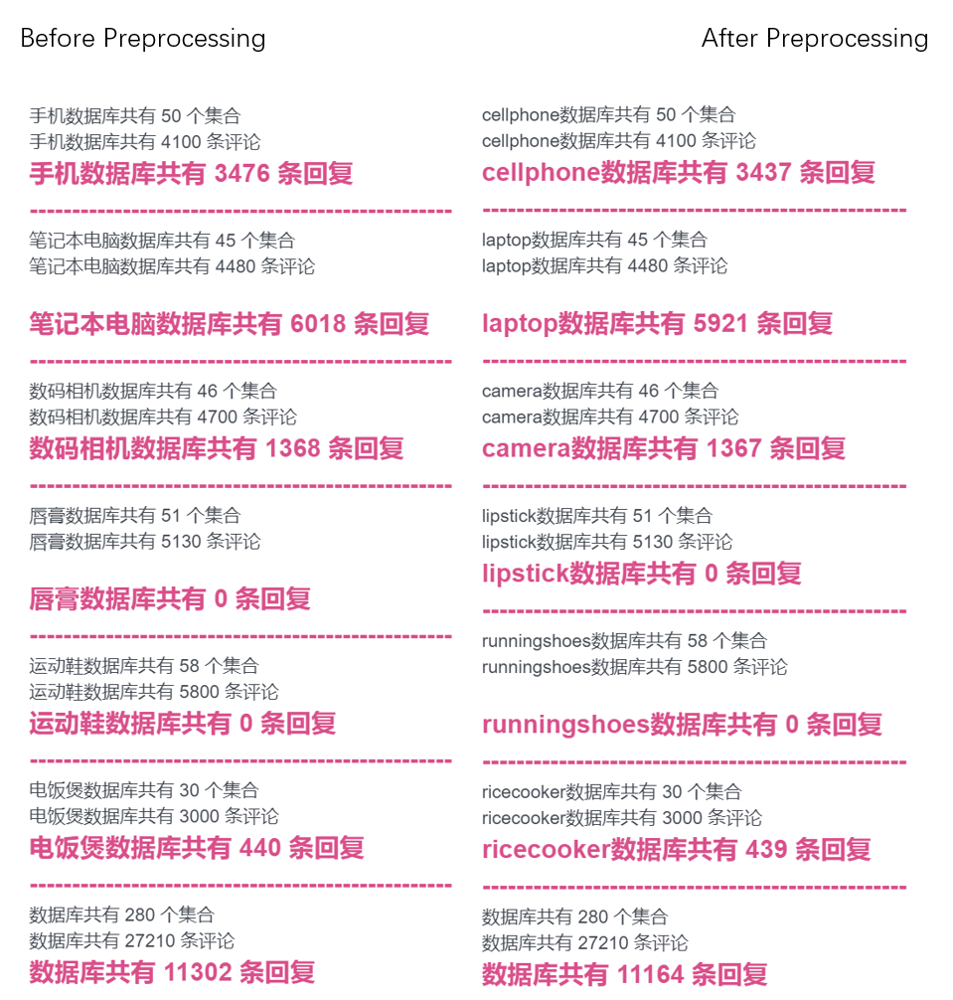
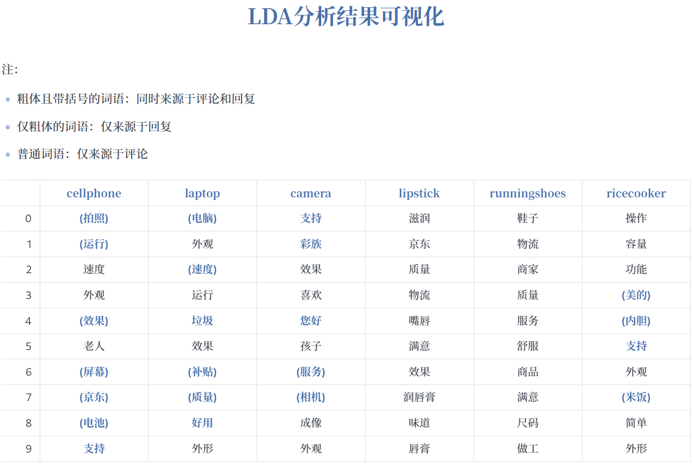

Preprocessing of replies
First, I designed a JavaScript script for batch reading data and preprocessing reply data.
The following figure is a comparison before and after processing. 
LDA and sentiment_orientation
LDA.py:
sentiment_orientation.py:
Then, run call.js to implement LDA and sentiment_orientation analyzer to process data.
LDA visualization
